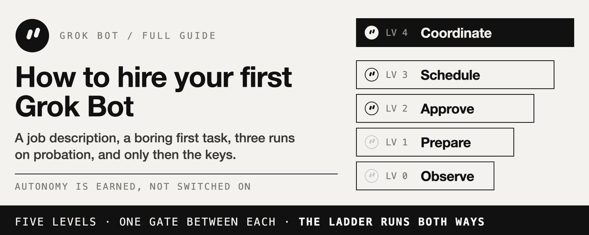
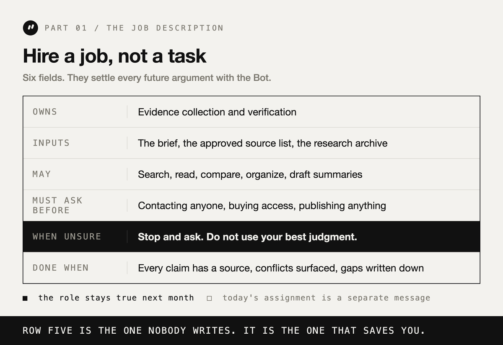
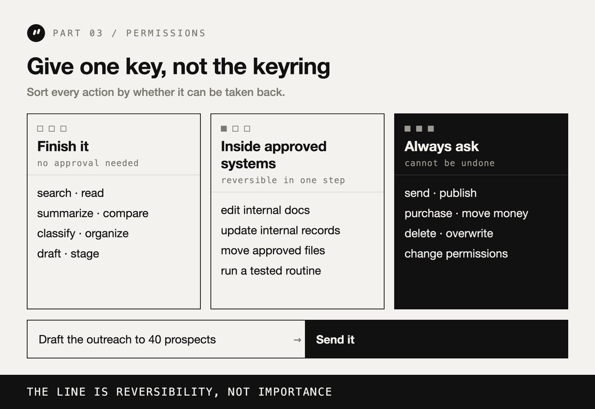
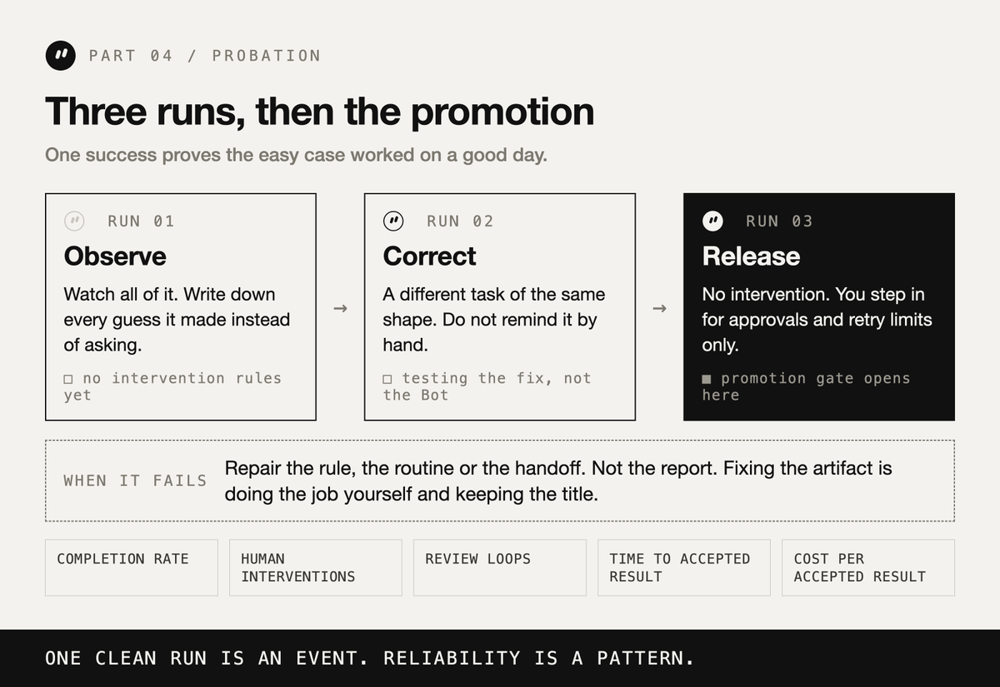
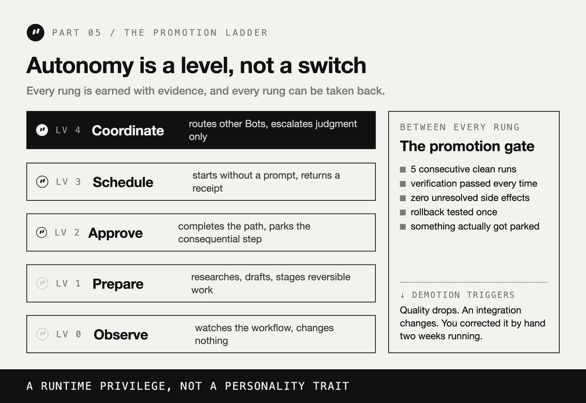

西堂 picks · 18/24
Grok Bot: How to Hire Your First AI Employee (Full Guide)
@distortgeekin · distort · Wed Sep 30 12:35:43 +0000 2026

Nobody hires a person by handing them the company card on day one and saying "handle my business."
That is almost exactly how most people are about to hire their first Grok Bot (xAI's AI assistant that comes with its own computer).
Create a Bot. Connect every tool you own. Give it something enormous and vague. Wait for magic.
The first run looks great. The second one too. Then it archives a thread from your accountant, trusts a source it should have flagged, or reaches the right answer through a path you would never have approved.
Now the teammate you wanted to trust needs supervision, and supervising it costs more than doing the work yourself.
The interesting question about Grok Bot is not whether Grok 4.6 is smart enough. It is a question every manager already knows how to ask:
How much authority has this thing actually earned?
A chatbot answers. A Bot signs into your tools, works inside a persistent computer, moves through multiple steps, and comes back with finished work instead of instructions for you to finish yourself.
That changes what you are doing when you set one up. You are not writing a prompt. You are staffing a role.
So run it like a hire. Job description, boring first task, trial run, probation, promotion on evidence, and a review every week.
This is the full system.
The 30-second version
- Hire a job, not a task. One sentence of ownership that stays true next month.
- Make the first job boring. Frequent enough to test, cheap enough to undo.
- Run the trial in text. Ask what it would do before letting it do anything.
- Define done before the first day. "Useful" is not a standard. A checkable list is.
- Give one key, not the keyring. Draw the line at reversibility, not importance.
- Probation is three runs. One success is an event. Reliability is a pattern.
- Promote on evidence. Five clean runs, rollback tested, zero unresolved side effects.
- Review every week. And fire the routines nobody would miss.
Everything below is the long version of those eight lines.
Part 1. Hire a job, not a task
The fastest way to get a useless bot is to give it work instead of a job.
Work is "summarize these five articles." A job is "you own competitor monitoring." The first is finished in ten minutes and teaches you nothing. The second can be evaluated, improved, and eventually trusted.
The one-sentence test.
Write what the Bot owns in a single sentence. If the sentence needs six unrelated verbs, you are trying to hire one person for four jobs, and the failures will be impossible to attribute.
Weak: "help me with marketing."
Strong: "you own weekly competitor monitoring and deliver a cited change report every Friday."
The second one tells you what to measure on Friday. The first one does not.
The job description a Bot can actually use.
Once the sentence exists, expand it into the five fields that decide every future argument between you and the Bot:
- Owns: the result it is responsible for.
- Inputs: what it is allowed to work from.
- May: the actions it can take without asking.
- Must ask before: the actions that always come back to you.
- Done when: the conditions that make the work acceptable.
A research role, written out:
Research Operator. Owns: evidence collection and verification. Inputs: the brief, the approved source list, the previous research archive. May: search, read, compare, organize, draft summaries. Must ask before: contacting anyone, buying access, publishing anything. Done when: every factual claim has a source, conflicts are surfaced, and open gaps are written down instead of smoothed over.
That is not a prompt. It is durable infrastructure. It should still be correct in six weeks.

Keep the job separate from today's assignment.
The common failure is stuffing everything into one enormous instruction: the role, the history, the workflow, the security policy, the quality bar, and the retry logic, all in a single block that grows every time something goes wrong.
Then every failure looks like a prompting problem. It usually is not.
If the Bot forgot a preference you stated last week, that is a state problem. If it opened the wrong tool, that is a routing problem. If it sent something that should have stayed a draft, that is a permissions problem. If it retried the same broken path six times, that is a loop problem.
Better prompts improve one run. A separated role improves every run after it, because you can finally tell which part broke.
Part 2. Make the first hire boring
The instinct with a capable new Bot is to give it something important. Resist it for one week.
Your first assignment exists to produce evidence, not value. You want a job where a mistake is visible in a minute and costs nothing to undo.
Frequent and reversible.
Two axes decide the first hire, and only two.
Frequency gives you signal. A task that happens once a quarter teaches you nothing until January.
Reversibility gives you room. A task you can undo lets the Bot be wrong without the mistake becoming your afternoon.
Good first jobs: collect and de-duplicate yesterday's support issues into a priority summary. Pull the five most important changes across a competitor list with a source and a date on every claim. Reproduce a reported bug and capture the steps, logs, and environment.
Bad first jobs: anything that sends, publishes, buys, deletes, or speaks to a customer.
The temptation is obvious. So is the failure cost.
Run the trial in text before it touches anything.
Before the first real run, ask for the plan instead of the result:
"Do not execute anything yet. Walk me through exactly what you would do, in order, naming every tool you would open and every judgment call you are unsure about."
This takes ninety seconds and it is the highest-value ninety seconds in the whole setup.
A Bot that is about to misread your inbox will tell you so in the dry run. It will say it plans to archive everything older than two weeks, and you will discover, in text, that this includes the thread you have been deliberately leaving unread.
Same misunderstanding. Found in a message instead of in your archive.
Define done before the first day.
Most disappointing bot output is not a capability failure. It is a specification failure, and both sides think the other one was unclear.
Avoid quality words that sound specific and are not: useful, professional, thorough, high quality, comprehensive.
Replace them with conditions the Bot can check itself:
Instead of "find good sources," write "find ten non-duplicate sources published in the last 90 days, each with publication date, author, URL, and the exact claim it supports."
Instead of "keep my inbox clean," write "zero unread by 9am, every reply under four sentences, anything with a deadline flagged rather than filed."
There is one more line that belongs in every definition of done, and almost nobody writes it: what to do when unsure.
The default behavior of a capable agent facing ambiguity is to use its best judgment, silently. You want the opposite. Make the instruction explicit: stop and ask. Being slow is free. Being wrong inside your outbox is not.
Part 3. Give one key, not the keyring
More integrations make a Bot more capable. They also widen the blast radius of every misunderstanding.
A Bot that monitors competitors does not need billing, customer messaging, production databases, and every file you own. Connect what this job requires. Add access when a real blocked task proves it is needed, not because it might be useful later.
The line is reversibility, not importance.
The useful permission policy is not based on how big a task feels. It is based on whether the action can be taken back.
Finish without asking: search, read, summarize, classify, compare, organize, draft, stage, simulate.
Allowed inside approved systems: editing internal documents, updating internal records, creating deliverables, moving approved files, running a routine that has already been tested.
Always ask: send, publish, purchase, delete, overwrite, change permissions, contact anyone externally, modify production, move money, accept terms.
Notice that "draft the outreach to 40 prospects" sits in the first group and "send it" sits in the third. That split is the whole design.

Finish the safe 90 percent.
A Bot that stops at ten percent because step nine needs approval is not being careful. It is being useless politely.
A good run ends with everything reversible complete and everything irreversible staged and described:
Researched 42 accounts. Ranked 10. Drafted 10 messages. Verified contact details. Waiting for approval: send the outreach batch. Messages sent: 0.
That is autonomy that saves time without spending your reputation.
The shared computer is not a set of separate desks.
This is the detail most people will get wrong, and it is worth stating plainly.
Bots on one account share an environment: files, browser sessions, and logins. That is exactly why handoffs between them are easy. It also means separate Bot names are a visual boundary, not a security boundary.
If a login exists on that shared computer, treat it as available to every Bot on the account. An instruction that says "do not open finance" guides behavior. It does not enforce anything.
If two roles genuinely need different trust levels, separate the underlying accounts or environments. Do not confuse a polite instruction with a control.
And when a Bot hits a login wall, hand it the session, never the password. It parks the run, you authenticate inside that session, it continues from the same state. A chat is a coordination surface, not a place to store secrets.
Part 4. Probation is three runs
A Bot succeeds once. Great. That proves the easy case worked on a good day.
Run it again. Then once more. One clean run is an event. Reliability is a pattern, and patterns need at least three points.
Run 1: observe. Watch the whole thing. Write down every misread instruction, every lost piece of context, every duplicated action, every strange tool choice, and every moment the Bot guessed instead of asking.
Run 2: correct. Give it a different but comparable task. Do not remind it of yesterday's mistake by hand. You are not testing whether it can follow a reminder. You are testing whether the fix you made to the role, the definition of done, or the permissions actually held.
Run 3: release. Let it work without intervention. Step in only for approvals, genuine ambiguity, or a retry limit.
Then measure five things: completion rate, how many times you intervened, how many review loops it needed, time to an accepted result, and cost per accepted result.

Repair the rule, not the artifact.
When the report comes back wrong, the tempting move is to fix the report. Ten minutes, done.
Do that and the same failure returns next week, because nothing in the system changed. You did not manage an employee. You did their job and kept the title.
The other loop: find the step that failed, repair the rule or the routine or the handoff that allowed it, run again, and confirm the failure is gone. Slower once, then never again.
Bound the loop.
"Keep working until it is done" sounds reasonable and is an unlimited budget attached to an undefined result.
Every recurring job needs five things around it: what success means, how success is checked, what exactly failed, how many attempts are allowed, and what happens when the attempts run out.
A workable default: retry twice on a transient tool failure, repair once on a malformed output, stop and ask when evidence conflicts, escalate after three failed correction rounds, and stop outright at the cost ceiling.
A Bot that knows when to stop is far easier to trust than one that never gives up.
Part 5. The promotion ladder
Autonomy is not a switch. It is a level, and levels are earned.
Level 0, observe. The Bot watches the workflow and changes nothing.
Level 1, prepare. It researches, drafts, classifies, and stages reversible work.
Level 2, execute with approval. It completes the path and parks before anything consequential.
Level 3, run on a schedule or a trigger. It starts without a prompt and comes back with a result and a receipt.
Level 4, coordinate. It routes work across other Bots and pulls you in only where judgment or identity is required.

Promotion is not a feeling about how the demo went. It is a gate:
Five consecutive clean runs. Verification passing every time. Zero unresolved side effects. Rollback tested at least once. The approval policy tested, meaning something actually got parked and you saw it.
The ladder runs in both directions, and this is the part almost everyone skips.
If output quality drops, move it down a level. If an integration changes underneath it, move it down. If you find yourself making manual corrections two weeks in a row, move it down.
Autonomy is a runtime privilege, not a personality trait the Bot keeps forever because it impressed you in August.
Part 6. The weekly performance review
Always-on automation does not fail loudly. It degrades quietly.
Interfaces change. Credentials expire. A source goes behind a login. Your priorities move. The routine keeps running the whole time, producing output that is technically on schedule and increasingly worth nothing.
Give every recurring job a weekly receipt:
Routine (a task the bot runs on a schedule or a trigger): competitor scan. Runs: 5. Passed: 4. Human repairs: 1. Average runtime: 14 minutes. Repeated failure: one source needs re-authentication. Status: keep.
Then spot-check one artifact yourself. The Bot can summarize its own history. It should not be the only judge of it.
And ask three uncomfortable questions about every routine:
- Did it run when it was supposed to?
- Was the output actually correct, not just present?
- Would I notice if this disappeared tomorrow?
If the answer to the third one is no, delete it. An automation portfolio is not a trophy shelf. The goal is to remove work, not to accumulate processes that run.
When to hire the second Bot
Multi-bot setups look impressive, so people create ten on day one: chief, researcher, strategist, writer, developer, designer, reviewer, operator, analyst, marketer.
What they have built is ten places for context to go missing.
Hire the second Bot when a real bottleneck appears, and split along the line where the bottleneck actually is. Split research from writing when the shared context gets noisy. Split checking from building when self-review starts rubber-stamping. Split operations from analysis when the permissions diverge.
When you do, start with a coordinator and three specialists, not a department. One intake, one place that decides what runs next, and one human gate before anything leaves the building.
And pass work, not transcripts. The lazy handoff copies the entire conversation into the next Bot, which then copies everything again, until every agent is reading dead ideas and superseded corrections.
A compact handoff carries the objective, the artifacts, the decisions already made, the constraints, the open questions, and the next gate. The artifacts hold the detail. The handoff holds the state. The thread holds the discussion. Asking one context window to be all three is how multi-bot systems get slow and confidently wrong at the same time.
Five ways the first hire goes wrong
1. The generalist. One Bot owns everything, its memory fills with unrelated preferences, and no failure can be attributed to anything specific.
2. No definition of done. It stops at plausible. You expected complete. Neither side was lying.
3. Best judgment as the default. Nobody wrote the "stop and ask" rule, so every ambiguity gets resolved silently and you find out three weeks later.
4. The builder is also the checker. The same assumptions that produced the work survive into the review, and confidence gets mistaken for evidence.
5. Automating the first success. The demo worked, so it went on a schedule. The realistic disaster is not a forbidden action. It is a permitted action repeated four hundred times because something upstream changed and nothing was watching.
What you are actually building
Grok 4.6 supplies the reasoning. The persistent computer gives it somewhere to work. The tools let it act.
Everything else on this list is management: what the Bot owns, what finished means, what it may touch, what happens when it is unsure, how many tries it gets, who checks the result, and which decisions stay with you.
That is the part people skip, and it is the only part that decides whether the Bot is a teammate or a liability with a name.
Most people will spend the next six months asking whether Grok is smarter than the other models.
The ones who get real work out of this will be asking a management question instead: what has this Bot earned the right to do without me?
Start with one boring job. Write the role. Run the trial in text. Three runs, then a promotion. Review it Friday.
Then hire the second one.
P.S. If you only take one thing from this: write the "what to do when unsure" line before the first run. It is one sentence, it costs nothing, and it prevents the specific class of failure you would otherwise discover weeks late, in your own outbox.
Source: https://x.com/distortgeekin/status/2105275395901726845
← 欢迎大家来到我们的 Grok Bot 零基础系列——「我看谁不学 Grok Bo Grok Bot: How to Build Your First AI Tea →